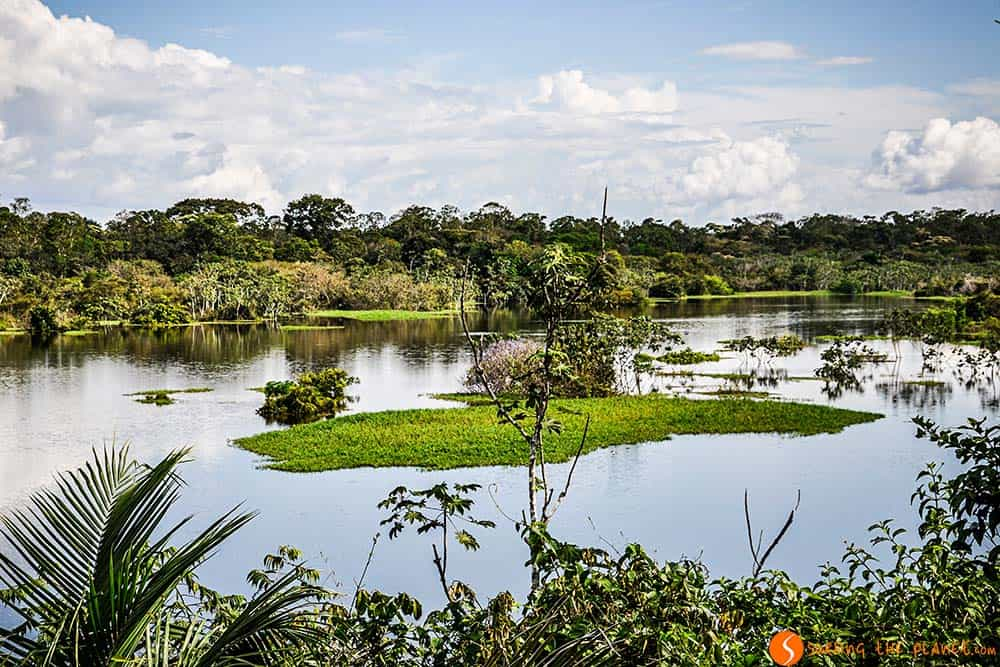
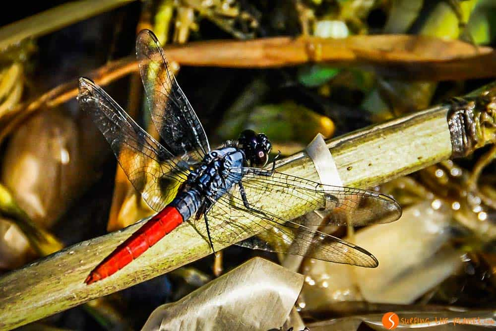
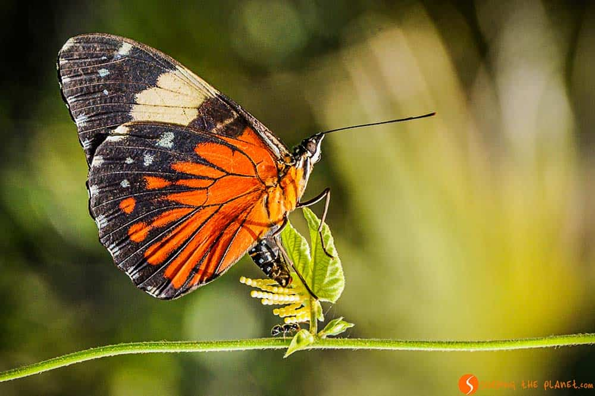

Education30 photos that will make you want to take a trip to the Amazon RainforestThe Amazon Rainforest is the ecosystem of largest diversity in our planet. Large parts of this mysterious rainforest are still unknown, and most of the jungle is only accessible by navigating on the mighty Amazon River. Hence, it is not surprising that taking a trip to the Amazon Rainforest is many travelers' dream. We had the chance to spend a couple of weeks in this world incomparable to anything we had seen before, and the animals, the plants, the flooded villages we saw are amongst our most amazing travel memories. We are sure that our photos will make you want to take a trip to the Amazon Rainforest. Exploring the flooded Amazon Rainforest by boat close to SantaremAnimals in the Amazon Rainforest: A pink dolphinA ceiba tree, one of the largest trees of the Amazon RainforestAnimals in the Amazon Rainforest: An iguana taking a sunbath on top of a treeA local greeting us from a boat close to SantaremOne of the beautiful lakes in the middle of the rainforestThe colors of the Amazon RainforestA house in a village flooded in the wet seasonMeeting a sloth - one of the highlights of a trip to the Amazon RainforestLooking at dense rainforest through a spiderwebThe city of Santarem, one of the main cities of the Amazon Rainforest, flooded in the wet seasonAnimals of the Amazon Rainforest: A White Fronted Capuchin Monkey climbing from tree to treeBirds populating one of the few trees that is not completely floodedChildren in a boat rowing towards usA beautiful cloud shining in the colors of the sunset in the Amazon RainforestA small house with a boat deep in the Amazon RainforestAnimals in the Amazon Rainforest: Close shot of a dragonflyThe dense jungle of the Amazon RainforestOne of the small rivers that flows into the mighty AmazonA pig laying on firm ground in a flooded farmMeeting of the waters: The colors of the River Tapajos and the Amazon mix together close to SantaremA meadow in the middle of the Amazon RainforestAnimals of the Amazon Rainforest: A nice, colorful butterflyA family in one of the small villages flooded in the wet seasonDawn on the lakeside in the middle of the Amazon RainforestThe hoatzin bird, one of the strangest birds of the Amazon RainforestA large tree in the dense jungle, where you have to cut your way throughOne of the many islands on the Amazon RiverA hawk sitting on a branch in the flooded Amazon Rainforest |


CopyRight © 2018-2019 |